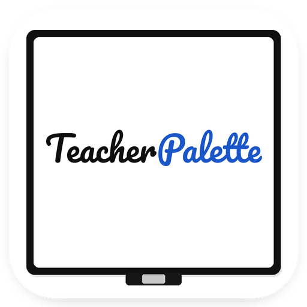

Draw, spotlight, whiteboard, timer, cursor — everything a live presenter needs, in one native macOS overlay. Built to run on top of Zoom, Meet, and Teams. 드로잉, 스포트라이트, 화이트보드, 타이머, 커서 — 발표자에게 필요한 모든 도구를 하나의 네이티브 macOS 오버레이 앱에. Zoom·Meet·Teams 위에서 그대로 작동합니다. 描画・スポットライト・ホワイトボード・タイマー・カーソル — プレゼンターに必要なすべてを、1 つのネイティブ macOS オーバーレイに。Zoom・Meet・Teams の上でそのまま動作。
Drawing, whiteboard, spotlight, laser, custom cursor, palette, multi-display, timer — one download replaces a whole toolbox of single-purpose apps. 드로잉, 화이트보드, 스포트라이트, 레이저, 커스텀 커서, 팔레트, 멀티 디스플레이, 타이머까지 — 한 번의 설치로 여러 개의 개별 앱을 대체합니다. 描画、ホワイトボード、スポットライト、レーザー、カスタムカーソル、パレット、マルチディスプレイ、タイマー — 個別アプリの寄せ集めを、1 つのダウンロードでまとめて置き換え。
Pen, highlighter, arrow, rectangle, text, and pixel/stroke eraser. Auto-clear on release. 펜, 형광펜, 화살표, 사각형, 텍스트, 픽셀/획 지우개. 손 뗄 때 자동 삭제 옵션. ペン・マーカー・矢印・四角形・テキスト・ピクセル/ストローク消しゴム。ペンを離すと自動消去可能。
Multi-page whiteboard with instant page switching, drag & drop images, and one-click PDF export. 여러 페이지를 즉시 전환, 이미지 드래그 앤 드롭, 원클릭 PDF 저장까지. 複数ページ即時切替、画像ドラッグ&ドロップ、ワンクリック PDF 保存。
Dim everything except a bright circle around your cursor. Trailing laser pointer for pointing without clicking. 커서 주변만 밝게, 나머지는 어둡게. 클릭 없이 시선을 유도하는 레이저 포인터. カーソル周りだけ明るく、他は暗く。クリックなしで視線を誘導するレーザーポインター。
Replace the arrow with your own image. Multiple cursor presets, swap on the fly. Click highlight ripple. 화살표 대신 원하는 이미지로. 여러 커서 저장, 즉시 전환. 클릭 시 파문 효과. 矢印を好きな画像に。複数プリセット保存、即時切替。クリック時の波紋エフェクト付き。
Full support for multiple monitors and iPad Sidecar. Choose which screen to annotate, whiteboard, or BRB. 여러 모니터와 iPad Sidecar 완벽 지원. 어느 화면에서 그릴지, 화이트보드 띄울지 선택. 複数モニターと iPad Sidecar に完全対応。描画・ホワイトボード・BRB を任意の画面で。
Every ⌘⇧ shortcut is remappable. Works from any focused app — Zoom, Slides, Keynote, Chrome. 모든 ⌘⇧ 단축키를 원하는 키로. Zoom·Slides·Keynote·Chrome 등 어떤 앱에서도 작동. すべての ⌘⇧ ショートカットを再割当可能。Zoom・Slides・Keynote・Chrome など、どのアプリでも動作。
Save favorite colors, custom slots, and cycle through with ⌥ + Scroll for one-hand color switching. 즐겨찾기 색상 저장, 커스텀 슬롯, ⌥ + 스크롤로 한 손 색상 전환. お気に入りカラー保存、カスタムスロット、⌥ + スクロールで片手カラー切替。
Full-screen "Be Right Back" overlay with a countdown for breaks. Students see when you'll return. 휴식 시간을 알리는 전체화면 "잠시 후 돌아오겠습니다" 오버레이 + 카운트다운. 休憩を伝える全画面「戻ってきます」オーバーレイ + カウントダウン。
Simple, honest, and short — because we don't collect anything. 간결하고 정직하게. 저희는 아무것도 수집하지 않기 때문입니다. シンプルで正直に。私たちは何も収集しないからです。
Nothing. TeacherPalette does not collect, store, or transmit any personal data. All processing happens locally on your Mac.
Your preferences (shortcuts, color palette, toolbar position, whiteboard pages) are stored in macOS UserDefaults on your device only. They never leave your Mac. Deleting the app removes this data.
TeacherPalette requests Input Monitoring permission so keyboard shortcuts (e.g. ⌘⇧D to toggle drawing) work while other apps like Zoom or Keynote are in focus. This permission is used solely to detect your configured shortcut key combinations. Nothing is recorded, logged, or transmitted.
None. TeacherPalette is a self-contained app with no external integrations, no cloud sync, and no analytics SDKs.
TeacherPalette is a presentation tool intended for adult presenters, but is safe for all ages — no data of any kind is collected from anyone.
If our practices ever change (they won't unless a feature genuinely requires it), we will update this page and note the effective date below.
Questions about privacy? Email woosyume@gmail.com.
없습니다. TeacherPalette는 어떠한 개인정보도 수집·저장·전송하지 않습니다. 모든 처리는 사용자의 Mac에서 로컬로만 이루어집니다.
사용자 환경설정(단축키, 팔레트, 툴바 위치, 화이트보드 페이지)은 macOS UserDefaults를 통해 사용자 기기에만 저장됩니다. Mac 밖으로 나가지 않으며, 앱을 삭제하면 함께 사라집니다.
TeacherPalette는 Input Monitoring 권한을 요청합니다. 이는 Zoom, Keynote 등 다른 앱이 활성 상태에서도 단축키(예: ⌘⇧D로 드로잉 토글)가 작동하도록 하기 위함입니다. 사용자가 설정한 단축키 조합을 인식하는 목적에만 사용되며, 어떠한 입력도 기록·전송되지 않습니다.
사용하지 않습니다. TeacherPalette는 외부 연동, 클라우드 동기화, 분석 SDK가 전혀 없는 독립 앱입니다.
TeacherPalette는 성인 발표자를 대상으로 하는 발표 지원 도구이지만, 모든 연령대에 안전합니다. 사용자의 나이와 무관하게 어떠한 정보도 수집하지 않습니다.
정책이 변경될 경우(기능상 반드시 필요한 경우가 아니라면 변경하지 않습니다) 이 페이지를 업데이트하고 아래에 발효일을 명시합니다.
개인정보 관련 문의는 woosyume@gmail.com로 연락 주세요.
ありません。TeacherPalette は個人情報を一切収集・保存・送信しません。すべての処理はお使いの Mac 上でローカルに完結します。
ユーザー設定(ショートカット、カラーパレット、ツールバー位置、ホワイトボードのページ)は macOS の UserDefaults を通じてご自身の端末のみに保存されます。Mac の外に出ることはなく、アプリを削除するとこれらのデータも削除されます。
TeacherPalette は 入力監視(Input Monitoring) 権限を要求します。これは Zoom や Keynote など他のアプリがアクティブな状態でもショートカット(例: ⌘⇧D で描画のオン/オフ)が動作するようにするためです。設定されたショートカットの組み合わせを検出する目的のみに使用され、入力内容の記録や送信は一切ありません。
利用していません。TeacherPalette は外部連携、クラウド同期、分析 SDK を持たない独立したアプリです。
TeacherPalette は成人プレゼンター向けのプレゼン支援ツールですが、あらゆる年齢層にとって安全です。年齢を問わず、いかなる情報も収集しません。
本ポリシーに変更がある場合(機能上どうしても必要な場合以外は変更しません)、このページを更新し、以下に発効日を明記します。
プライバシーに関するご質問は woosyume@gmail.com までご連絡ください。
Feature request, bug report, or a general question — reach out anytime. 기능 제안, 버그 신고, 일반 문의 — 언제든 연락 주세요. 機能リクエスト、バグ報告、一般的なご質問 — いつでもご連絡ください。